Video 001 · @wealth reel · visual reverse-engineering
Keep Your Blessings Quiet: style bible
How the reel is drawn, lit, framed and moved. Every observation comes from frames pulled out of the 1080×1920 source; colour values were sampled from the pixels.
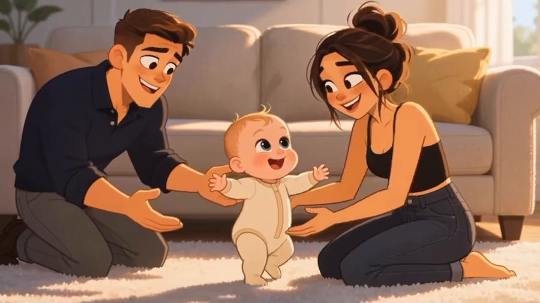
Shot 11 at 17.0 s. The look in one frame: inked characters, a soft painted set, low warm side light.
Overall look
Genre of drawing
Modern feature-animation 2D in the Disney/Pixar-adjacent "cartoon realism" vein. Inked characters with cel shading on soft, painted, almost photographic backgrounds.
Likely pipeline
AI-generated stills turned into motion with image-to-video. Evidence: fully fluid motion on every frame, morphing transitions, props rendered more realistically than the people, and slight drift in details from shot to shot. This is inferred, not confirmed.
Three rules that make the look
Everything is graded very warm: skin reads as saturated orange.
Characters are outlined; backgrounds and props are not.
A strong rim light traces every silhouette.
Line & rendering
Zoomed 2× from full-resolution frames.
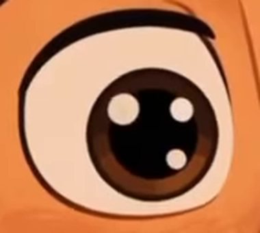
Eye (him): cream-tinted white (not pure white, about #F3CCAF), brown iris ring, large black pupil, 3 white highlight dots. Heavy upper lid line, no lower lid line.
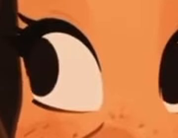
Eye (her): thicker upper lash mass with 2–3 flicked lashes at the outer corner. The iris is nearly all black. Freckle specks sit just below.
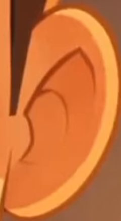
Coloured line: where light hits, the outline turns bright orange instead of dark brown. Inner ear folds use thin, darker orange strokes.
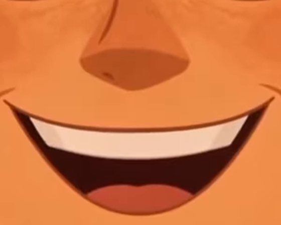
Nose & mouth: the nose is a darker flat triangle with one side line and a tiny nostril tick. Teeth are a single white band; the mouth interior is dark maroon (#380E0A) with a salmon tongue (#BE4A2E).
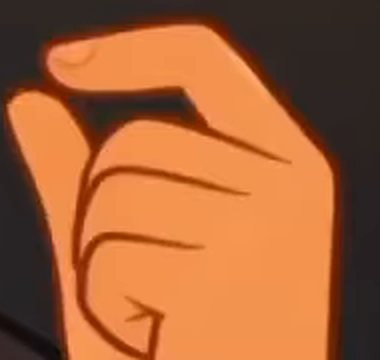
Hands: simplified five-finger hands. Knuckles and creases are single tapered strokes, the fingernail is a lighter oval, and the outline is thick and dark red-brown.
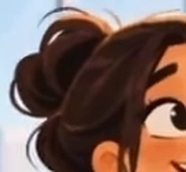
Hair: shaped as big clumps with a few dark separating strokes, then flyaway single-line strands. A warm highlight band sits on top.
Line spec
Colour: very dark warm brown, about #100402, never neutral black. It shifts to orange on lit edges.
Weight: about 3–4 px at 1080 px wide for silhouettes and about 1.5–2 px for inner detail. Ends taper; the line is slightly thicker in the crooks of joints.
Shading: two tones (light and shadow) blended with a soft gradient, not a hard cel edge. Shadow skin is about #9A451D against lit skin at #EA8241.
Texture: fine painterly grain on skin, plus soft round blush patches (#E17235) and freckle speckles on the nose and cheeks.
Mixed media: money, keys, the car and windows are rendered semi-realistically with no outlines. That contrast keeps attention on the characters.
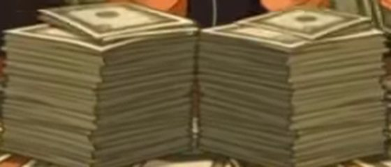
Props carry realistic detail and no ink line.
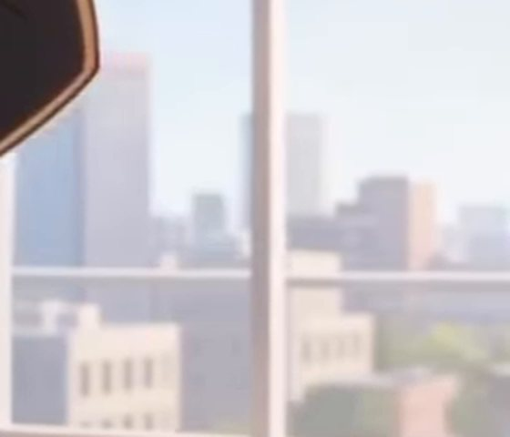
Backgrounds are painted, low contrast and slightly blurred, with no ink.
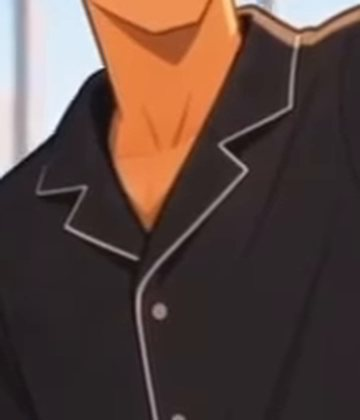
Wardrobe detail: light grey piping on a black pyjama shirt, with brown rim light on the fabric.
Motion & animation
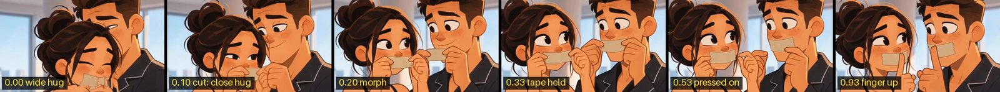
Shh beat after the new-home scene (6.87 → 7.8 s). A hard cut to the close hug, then a 0.1–0.2 s morph into the taping pose.
How things move
On ones: every frame is a new image. The source is about 24 fps, converted to 30 fps by repeating every 5th frame (measured: a near-zero frame difference every 5 frames).
Motion is smooth and floaty, with no squash-and-stretch, smears or held poses.
Each shot is a single continuous action of 0.7–3.7 s: count money, lift keys, hug, hand over a fob, take steps.
The camera is mostly locked off. Shot 6 has a slow push-in on his face as it turns from shock to a grin; some shots drift slightly.
Secondary motion is limited to blinks, small head tilts and hair strands swaying.
The shh choreography (repeats 4×)
0.0 Cut on the hug from the wide scene to a close two-shot of the same moment.
~0.1–0.2 Morph: the hug melts into both characters facing camera, each holding a strip of tape taut.
~0.3–0.5 Tape pressed over the mouth; eyes go wide and look sideways at each other.
~0.8 Index finger raised to the taped lips; they hold a conspiratorial side-glance.
The background changes every time to match the scene: dark interior, daylight apartment, bedroom lamp, sunny car park.
Composition
Thirds grid in white. Yellow lines show the triangle formed by the two heads and the focal point (red dot). The sun icon marks the key light.
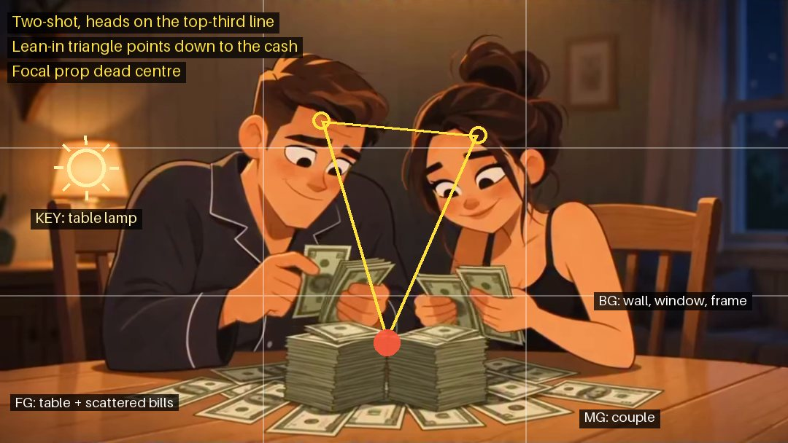
Savings: symmetric lean-in, heads on the upper third line, cash stack on the centre line. Practical lamp on the left.
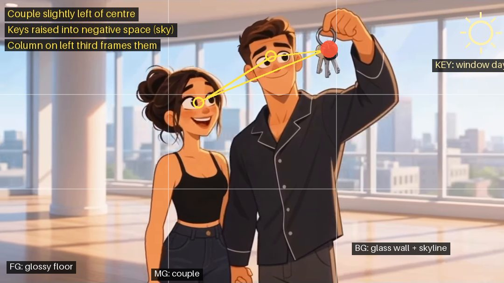
New home: couple left of centre; the keys rise into open sky on the right. The white column frames the left third.
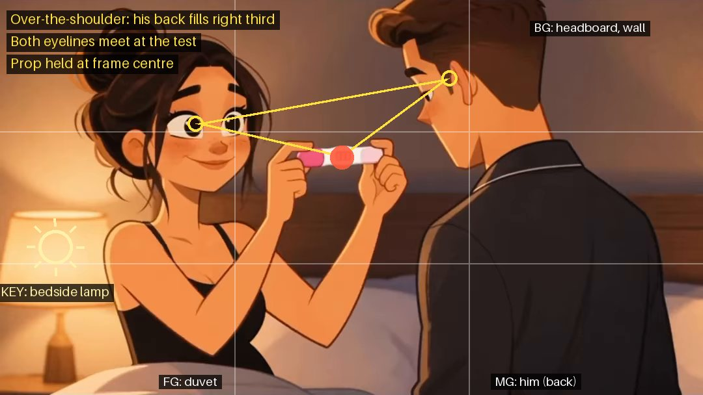
Pregnancy test: over-the-shoulder, with his dark back as a framing block on the right. Both eyelines meet at the test.
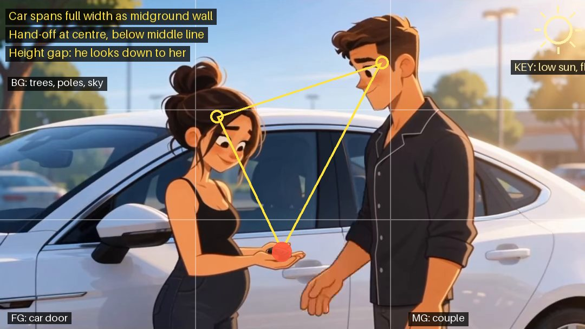
New car: the car is a full-width midground wall and the hand-off sits at the low centre. Backlit by low sun with flare at the top right.
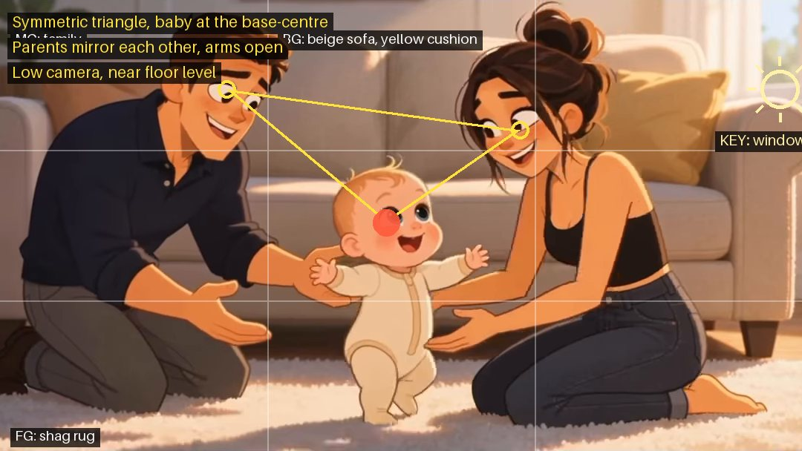
Baby: the most symmetric frame. Parents mirror each other with the baby at the base of the triangle, camera near floor height.
Framing rules used throughout
Always two characters, side by side. The man is on the right in every scene except the very first.
Wide "win" shots are at eye level, about knee-up to full figure.
Shh shots are tight two-shots, cropped at the chest and filled edge to edge with the two faces.
Reaction is a centred, symmetrical big close-up.
The prop is always at frame centre: cash, keys, test, fob, baby.
Shallow depth of field. The background is always softer than the characters.
Background design
Backgrounds are painted, unlined and slightly blurred. Each one has a single obvious light source and few, large, simple shapes. Interiors at night are lit by a visible lamp; day scenes are lit by huge windows or a low sun.
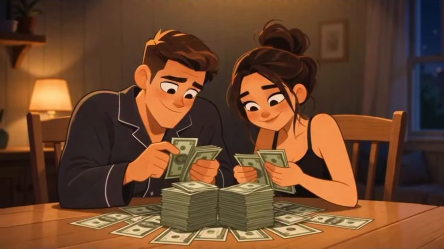
1 · Night dining room
Wood-panelled walls in olive-brown, a wooden table and spindle chairs, a shaded table lamp at the left, a shelf with a plant, a framed picture, and a dark blue window with a star at the right. Mood: cosy, secret, after-hours.
An unfurnished high-rise unit: floor-to-ceiling window grid, a city skyline in hazy blue, white round columns, a glossy honey-wood floor with long sun streaks, recessed ceiling lights. Mood: open, aspirational, fresh start.
sky#DCE5F1floor#E4AF8Askyline#ADB0BEwalls#E9D4CB
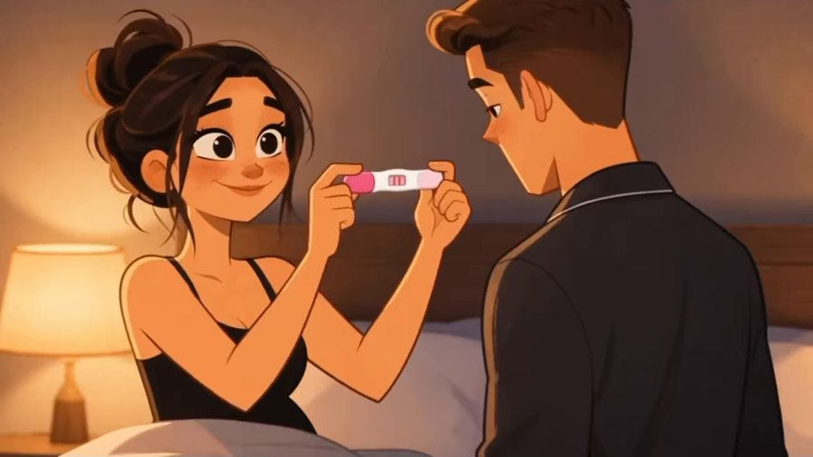
3 · Bedroom at night
A wooden headboard, white duvet and pillows, a bedside lamp with a cream shade at the left, a plain mauve-brown wall. Very little else. Mood: intimate, private.
A white modern sedan with blue-tinted reflections, a sky shading from blue to pale, rounded green trees, tall lamp posts, a low-rise building, and low sun with a lens flare at the top right. Mood: bright, achieved.
A beige-taupe sofa with a mustard cushion and a terracotta cushion, a cream shag rug in the foreground, a potted plant at the top left, a sheer-curtained window at the right with afternoon light raking across the floor. Mood: home, settled.
The close-up uses the same location, fully blurred. Only the colour of light and a hint of shape remain, such as a window grid or a car roof.
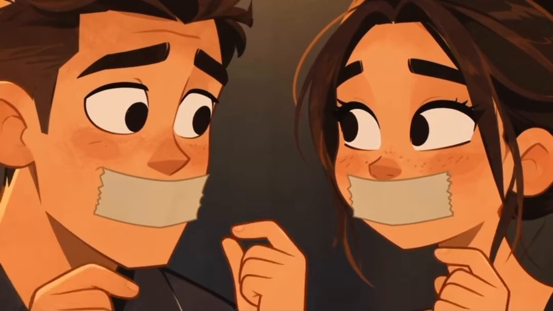
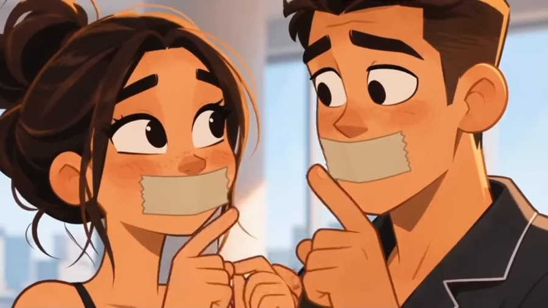
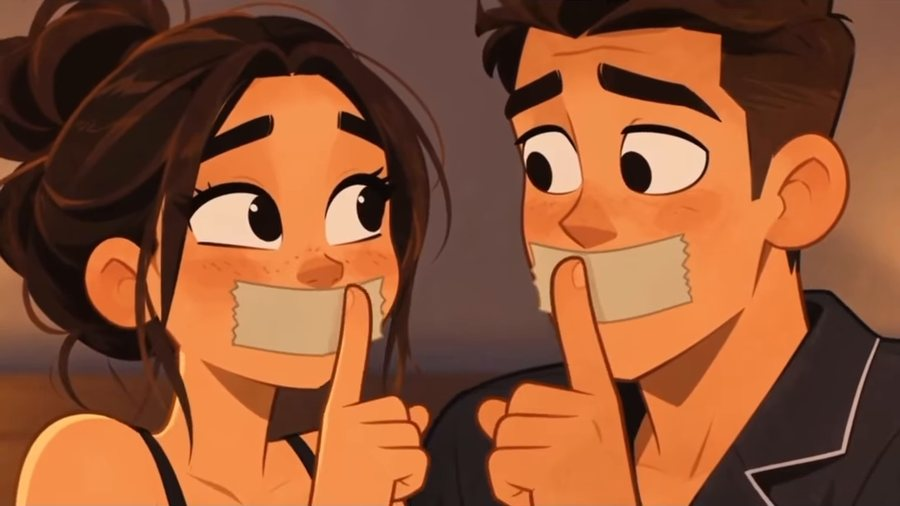
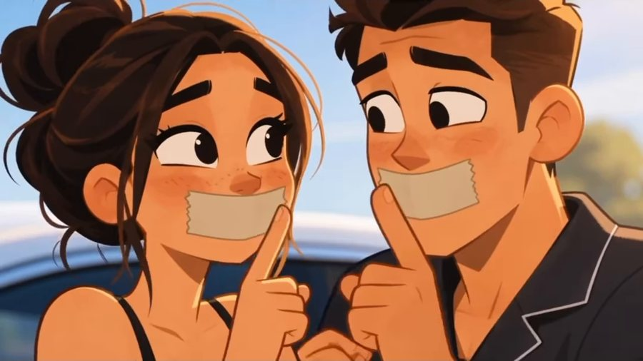
Lighting rhythm across the reel
Warm night → cool day → warm night → cool day → warm golden. Alternating colour temperature makes each "win" feel like a new chapter, while orange skin keeps it all one world.
Foreground design
Three depth layers in every wide shot: a soft foreground surface (table, duvet, car door, rug), the characters in the sharp midground, and a blurred background.
Foreground elements are surfaces, not objects. They run along the bottom edge and ground the characters without blocking them.
The only foreground "object" is the hero prop, held at chest height in the centre.
Characters are separated from the background by outline + rim light + depth of field, never by a hard colour contrast alone.
Wardrobe is dark (black and navy), so figures read as strong dark masses against light or mid-tone sets. Skin glows on top of those masses.
No text, logos or UI inside the picture. The only text is the title above it.
Layering at a glance: car door (FG), couple (MG), trees and sky (BG).
Characters
Proportions are stylised realism: adults are about 6.5–7 heads tall, with slightly enlarged heads and eyes that take up about 30% of the face width. Eyes sit at the vertical middle of the head. Same skin family for both adults, deliberately oversaturated orange.
Him
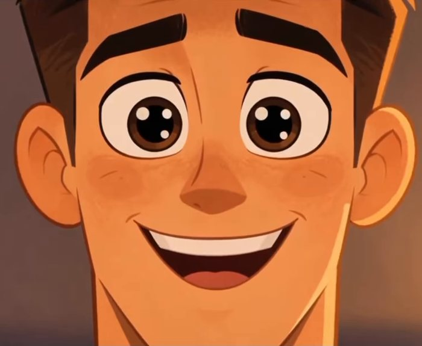
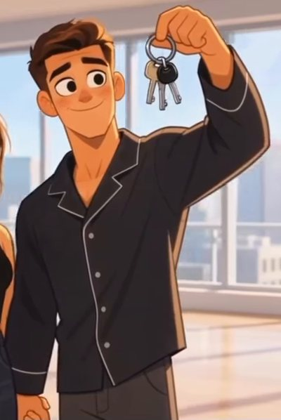
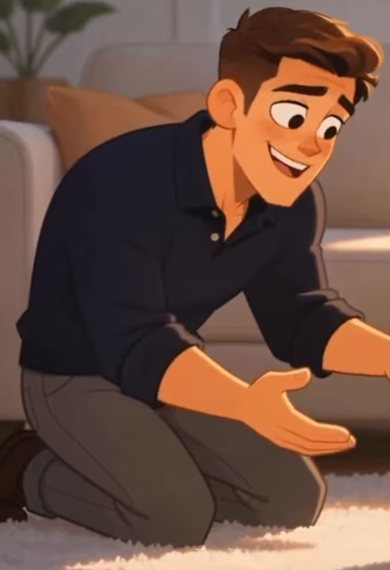
Head & face
Long face, defined square jaw tapering to a narrow chin; long neck with a visible Adam's apple and neck tendons.
Large C-shaped ears that stick out slightly, always rim-lit orange.
Thick wedge eyebrows, darker than his hair (about #1A0C07). They tilt up in the middle for the sheepish "worried-happy" look.
Big oval eyes, brown irises, multiple highlight dots.
Triangular nose made of tone, not line. Soft round blush patches with freckles.
Default expression is a closed-mouth smirk. Big moments get a wide open grin.
Hair & wardrobe
Dark brown (#39190F) with warm caramel highlights. Short faded sides, a longer swept-up quiff pushed to one side, a few loose strands on the forehead.
Scenes 1–4: black long-sleeve pyjama-style shirt, notched lapel collar, light grey piping on the collar, placket and cuffs, small grey buttons. Sleeves rolled to the elbow in the car scene. Charcoal trousers.
Scene 5: navy (#1F1922) button-neck long-sleeve shirt with sleeves pushed up, grey-brown chinos, dark shoes.
Lean, tall build, noticeably taller than her (about a head).
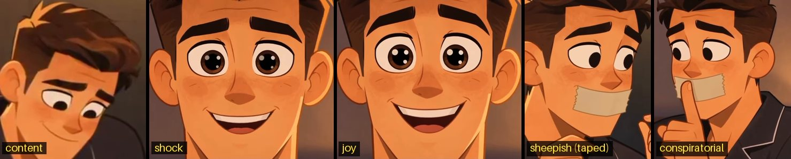
His expression range.
Her
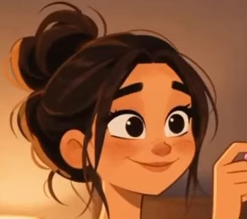
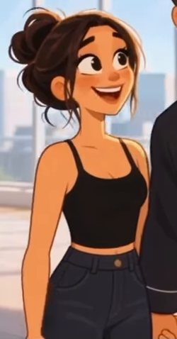
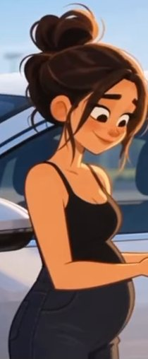
Head & face
Softer oval face with a rounder chin, slightly peachier skin than his (about #D47947 lit).
Big eyes with a thick upper lash line and 2–3 flicked lashes; no lower lashes. Irises read almost black.
Thick, dark, gently arched brows.
Freckles across the nose bridge and cheeks, round blush patches, a small button nose.
Expressive, wide open-mouth smile; often a sly side-eye.
Hair & wardrobe
Very dark brown (#3C201B) hair in a messy high top-knot bun, with many loose strands framing the face and falling to the shoulders. This silhouette identifies her.
Black spaghetti-strap crop cami (#1C1714) showing a strip of midriff.
High-waisted dark-wash jeans (#2F2C34) with a visible button and front pockets.
Same outfit in every scene, including pregnancy (the cami stretches over a rounded belly). Barefoot in the living room.
Slim, petite build.
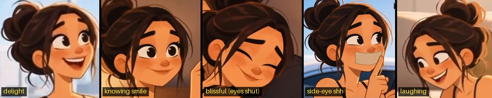
Her expression range.
The baby
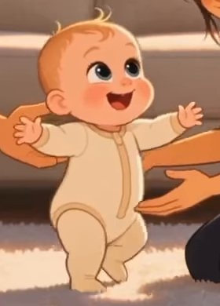
About 3 heads tall: a very large round head, chubby limbs, tiny hands.
Wispy strawberry-blonde hair with a single curl on top.
Huge blue-grey eyes with white highlights; rosy round cheeks (#F3A474 skin, pinker blush); tiny nose; open laughing mouth with a visible tongue.
Cream-peach footed zip-up onesie (#DFA575 in the warm light) with a centre zip and ribbed cuffs.
Drawn with thinner, lighter brown lines than the adults, which makes the baby read softer.
Shown only in the final scene, where the baby copies the parents' finger-to-lips.
Props
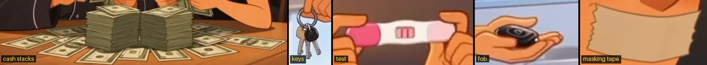
Prop
Look
Meaning
Cash
Two tall stacks of US-style green bills plus a fan of loose bills; realistic, desaturated olive green (#70633D)
Savings
House keys
Silver ring with 3–4 keys (silver and brass), held high
New home
Pregnancy test
White stick, hot-pink cap and window (#F25979), two pink lines
Pregnancy. The brightest saturated non-skin colour in the reel.
Car fob
Black rounded remote key resting in her cupped palm
New car
Masking tape
Beige paper tape (#D6A878) with torn, jagged ends, slightly translucent, thin outline
The refrain: keep quiet
Master palette
Skin & face
his skin lit#EA8241his skin shadow#9A451Dher skin#D47947baby skin#F3A474blush#E17235eye white#F3CCAFmouth#380E0Atongue#BE4A2Eink line#100402
Hair & wardrobe
his hair#39190Fbrows#1A0C07her hair#3C201Bblack shirt#241F21navy shirt#1F1922chinos#4F4036cami#1C1714jeans#2F2C34onesie#DFA575
Sampled from compressed video pixels under scene lighting, so treat these as on-screen values, not the artist's flat base colours.
Recreate the look
A reusable style block and character descriptions for image or video generation, written from the observations above.
STYLE: modern 2D feature-animation cartoon, Disney/Pixar-adjacent, clean tapered dark-brown ink outlines on characters only (outline turns orange where rim-lit), soft two-tone cel shading with gentle gradients, painterly grain on skin, very warm orange skin tones, round blush patches and freckles, big glossy eyes with multiple white highlight dots, strong warm rim light on every silhouette, painted unlined slightly blurred backgrounds, shallow depth of field, one obvious light source (table lamp at night / big windows or low golden sun by day), cinematic 16:9.
HIM: tall lean man, about 6.5 heads tall, long face with square jaw, large ears, thick dark wedge eyebrows, dark-brown hair with short sides and a swept-up side quiff, brown eyes, freckles; black long-sleeve pyjama-style button shirt with notched collar and light-grey piping, charcoal trousers. (Final scene: navy button-neck shirt with pushed sleeves, grey chinos.)
HER: petite woman, oval face, big near-black eyes with thick upper lashes and flicked outer lashes, freckles across nose, very dark brown hair in a messy high top-knot bun with many loose face-framing strands; black spaghetti-strap crop cami, high-waisted dark-wash jeans.
BABY: about 3 heads tall, wispy strawberry-blonde hair with one curl, big blue-grey eyes, rosy cheeks, cream footed zip-up onesie, softer thinner line work.
SHH BEAT: tight two-shot of the couple, each pressing a strip of torn beige masking tape over their mouth, then raising an index finger to their lips, sly sideways glance at each other, background = same location blurred.
Source: Instagram reel DgHUJ3Bhpt3 by @wealth. Reference frames are stored with the video in the circle_canvas repo under videos/001-keep-your-blessings-quiet/.